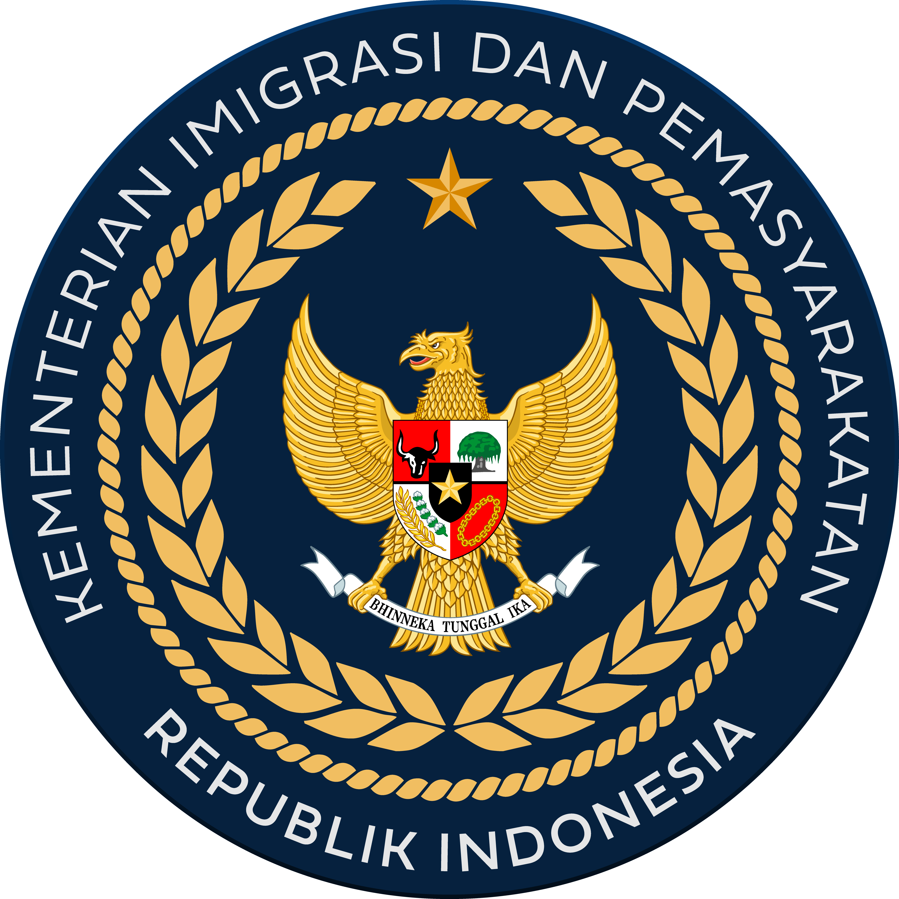
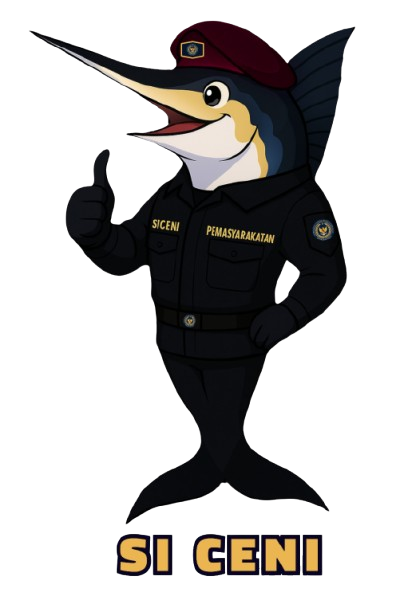

KEMENTERIAN IMIGRASI DAN PEMASYARAKATAN
LAPAS KELAS IIA KOTABARU
SI CENI LAPAS KOTABARU
Sistem Cepat Melayani
Layanan Kunjungan
Layanan Integrasi (PB, CB, DAN CMB)
Layanan Pengaduan
FOLLOW US ON SOCIAL MEDIA
